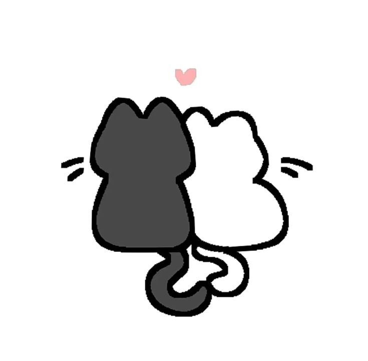
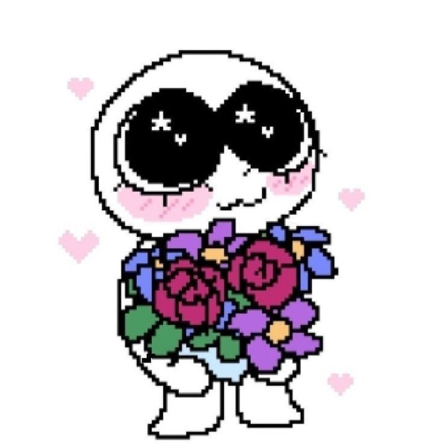
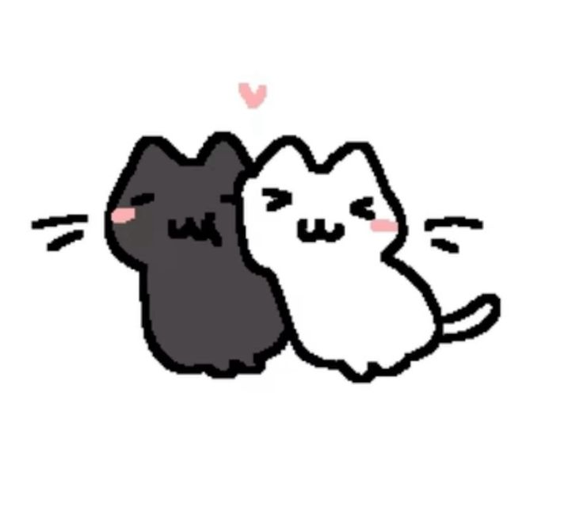
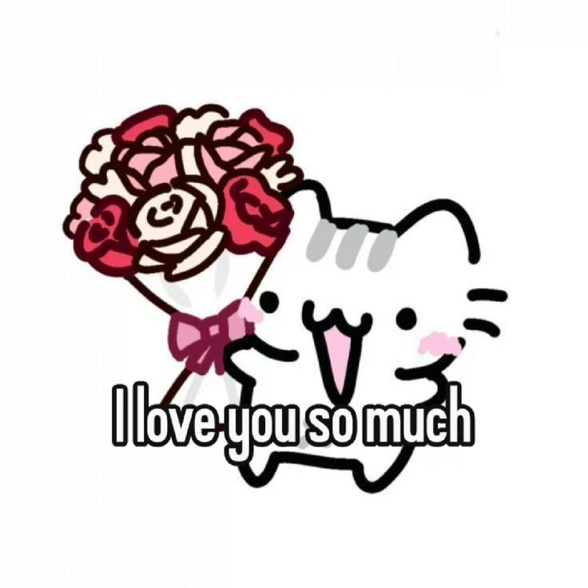

i ADORE your voice so so much. the first time i heard you my jaw actually dropped. i was completely drawn in. i swear you're a siren the way your voice pulled me in without me realizing (you didn't even have to sing either! your speaking voice alone got me so obsessed.) and i fell for it completely. (no complaints at all (˶ᵔ ᵕ ᵔ˶) ‹𝟹).

your face
i love your face so much. you are so handsome, so fine, so sexy, so yummy. ooouu how i love looking at the pics i have of u (⸝⸝⸝>﹏<⸝⸝⸝) i am so in love. i look at your pics every night before i fall asleep just admiring that pretty face of yours.

your eyes
i love those eyes of yours. for me, your eyes stand out a lot and i love them so much. i can't wait to see how you look at me with them in every angle (⸝⸝ ♡﹏♡⸝⸝). when you're looking down at me.. looking up at me.. looking at me sideways... mmmm.... every angle... i can't wait. you are so fine.

your mindset
i told you this a long long time ago but i want you to know how much i love the way you think. you have this waay of staying positive even when things aren't looking good and i really love that so much. you're able to find the good in every situation and you're genuinely very strong for that. it takes a lot for someone to train their mind to think that way. i admire this so much about you. you have a beautifl outlook on life and i never want you to forget that. you are such a beautiful person for that and i'm extremely lucky to have you in my life. please don't ever lose yourself because this part of you is something that really puts you all together. i love the way you see life. you have so much light in you. i'm super in love with this part of you.
your intelligence
i especially love how smart you are. not just in the way you understand things, but in the way you speak and think. you have this way of showing your intelligence and i don't have the words to explain how you do it but know that it's extremely attractive when you use that big brain of yours. i'm so in love. i love that you're so smart. i feel so secure and very lucky being with someone with a beautiful mind. it honestly amazes me so much and i could listen to you talk about anything for hours.

how lucky i am
in conclusion, i am in love with every aspect of you. you have so much of you to love and i'm lucky to be the one to be by your side. i don't know what's a stronger word for `love` but i just love everything about you. i will update this more when i have the words i wanna say (so keep checking every now & then.. („• ֊ •„)) i love spending time with you, listening to you speak and sing, playing games with you, and most importantly i just love getting to know you more. you're so mysterious to me and the more i get to know you i just feel so lucky that i'm just knowing more about you. i love you. i adore you. so so much. i'm so lucky.